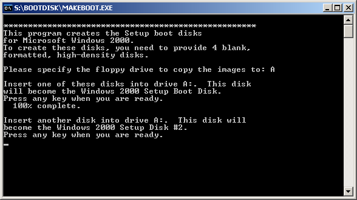

On The Windows 2000/XP Setup Disks
Version: Default* | Print Friendly With Images* | Print Friendly Without Images*
For: Windows 2000 Professional | Windows XP (32)
Last Reviewed/Updated: 06 Apr 2020 | Published: 23 Sep 2002 | Status: Active
- 1. Introduction
- 1.1. Abbreviations
- 2. Creating The Windows 2000 Setup Disks
- 2.1. Creating The Windows 2000 Setup Disks: After Booting A Computer From The Windows 98/ME Startup Disk
- 2.2. Creating The Windows 2000 Setup Disks: In Windows 9x/ME
- 2.3. Creating The Windows 2000 Setup Disks: In Windows 2000/XP
- 3. Creating The Windows XP Setup Disks In Windows 9x/ME/2000/XP
- 3.1. Creating The Windows XP Setup Disks In Windows 9x/ME
- 3.2. Creating The Windows XP Setup Disks In Windows 2000/XP
- 4. Booting A Computer From The Windows 2000/XP Setup Disks
- 4.1. Booting A Computer From The Windows 2000 Setup Disks
- 4.2. Booting A Computer From The Windows XP Setup Disks
- 5. Resources And Additional Information
1. Introduction
The Windows 2000 Professional and Windows XP (Windows 2000/XP) product CD is a bootable disc from which Windows 2000/XP Setup is loaded. Windows 2000/XP Setup consists of a near minimal 32-bit Windows operating system, a text mode user interface, and numerous 32-bit device drivers that constitute a preinstallation environment from which you can run the Recovery Console to repair a Windows 2000/XP installation, or initiate the installation of Windows 2000/XP from the Windows 2000/XP product CD.
i
The Windows 2000/XP Setup preinstallation environment is:
- the successor to the Windows 9x/ME Startup Disk.
- the forerunner of the official Microsoft product released in 2003 called Windows Preinstallation Environment (Windows PE).
To boot a computer from the Windows 2000/XP product CD, insert the Windows 2000/XP product CD into the CD/DVD drive, power on/restart the computer, and, when prompted, press any key to boot from CD. If the prompt to press any key to boot from CD does not appear and the computer has multiple CD/DVD drives, insert the Windows 2000/XP product CD into the other CD/DVD drives and try again. If the prompt to press any key to boot from CD still does not appear, and if the Windows 2000/XP product CD is functional and the CD/DVD drive(s) are functional, then either: 1.) the computer BIOS does not support booting from CD/DVD drives, which is unlikely for computers manufactured since 2002; or 2.) the computer BIOS is not configured to boot from CD/DVD drives, which means, to boot the computer from the Windows 2000/XP product CD, you must enter the BIOS setup program and configure the BIOS to boot from CD/DVD drives.
i
- The prompt to press any key to boot from CD lasts only a couple of seconds. If you do not press any key during this time, the computer proceeds with the boot process as normal. Therefore, if the computer appears to boot as normal, it is suggested that you first try powering on/restarting the computer and paying closer attention for the prompt to press any key to boot from CD.
- Further discussion of the BIOS is beyond the scope of this page. For information on how to enter the BIOS setup program and how to configure the BIOS to boot from CD/DVD drives, see the computer motherboard/BIOS documentation.
If a computer does not boot from the Windows 2000/XP product CD and you do not want to configure the BIOS to boot from CD/DVD drives, an alternative is to boot the computer from the Windows 2000/XP Setup Disks.
The Windows 2000/XP Setup Disks are a series of floppy disks (four/six, respectively) from which is loaded the exact same Windows 2000/XP Setup preinstallation environment that is loaded from the Windows 2000/XP product CD. Accordingly, after booting a computer from the Windows 2000/XP Setup Boot Disks, you can run the Recovery Console to repair a Windows 2000/XP installation, or initiate the installation of Windows 2000/XP from the Windows 2000/XP product CD. This Web page describes how to create, and how to boot a computer from, the Windows 2000/XP Setup Disks.
1.1. Abbreviations
- 9x = Windows 95 and Windows 98 Second Edition.
- 98 = Windows 98 = Windows 98 Second Edition.
- ME = Windows ME = Windows Millennium Edition.
- 2000 = 2000 Pro = Windows 2000 Pro = Windows 2000 Professional.
2. Creating The Windows 2000 Setup Disks
The Windows 2000 Setup Disks are a series of four floppy disks created by running a file on the Windows 2000 product CD. The X:\BOOTDISK\ folder, where X is the CD/DVD drive with the Windows 2000 product CD, contains six files:
The four image files, CDBOOT1.IMG - CDBOOT4.IMG, correspond to and contain the files written to each of the four Windows 2000 Setup Disks. The two application files, MAKEBOOT.EXE and MAKEBT32.EXE, do the same thing: extract and write the contents of the four image files to the four Windows 2000 Setup Disks, and make the first disk of the series, the Windows 2000 Setup Boot Disk, bootable. The only difference between MAKEBOOT.EXE and MAKEBT32.EXE is that MAKEBOOT.EXE is a DOS-based (16-bit) executable and, therefore, can be run on MS-DOS and Windows 9x/ME/2000/XP, whereas, MAKEBT32.EXE is a Windows NT-based (32-bit) executable and, therefore, can only be run on Windows NT/2000/XP. The Windows 2000 Setup Disks are identical whether MAKEBOOT.EXE or MAKEBT32.EXE is run to create them.
i
Since the Windows 2000 Setup Disks are identical whether MAKEBOOT.EXE or MAKEBT32.EXE is run to create to them, and since MAKEBOOT.EXE is compatible with a wider range of operating systems, MAKEBOOT.EXE is used to create the Windows 2000 Setup Disks in this page.
Creating the Windows 2000 Setup Disks requires four floppy disks, starting a computer to MS-DOS with CD/DVD drive support (e.g., booting a computer from the Windows 98/ME Startup Disk) or Windows 9x/ME/2000/XP, and the Windows 2000 product CD.
i
Floppy disks are extremely unreliability. Therefore, it is strongly recommended that you create at least two sets of the Windows 2000 Setup Disks. Moreover, if an error message appears while creating the Windows 2000 Setup Disks, the floppy disk is probably bad. Try again with a different floppy disk.
2.1. Creating The Windows 2000 Setup Disks: After Booting A Computer From The Windows 98/ME Startup Disk
- Boot the computer from the Windows 98/ME Startup Disk.
- The Microsoft Windows 98/ME Startup Menu appears. Start the computer with CD/DVD drive support:
- Windows 98 Startup Disk: Press 1 | Enter.
- Windows ME Startup Disk: Press 2 | Enter.
- The DOS prompt at A:\> appears.
- Insert the Windows 2000 product CD into the CD/DVD drive.
- Type type X:, where X is the CD/DVD drive with the Windows 2000 product CD, and press Enter.
!
When a computer is booted from the Windows 98/ME Startup Disk and CD/DVD drive support is selected, the drive letters assigned to CD/DVD drives might be different than if the computer was started to Windows installed on the computer hard drive.
- The DOS prompt at X:\> appears.
- Type CD BOOTDISK and press Enter.
- The DOS prompt at X:\BOOTDISK> appears.
- Type MAKEBOOT.EXE and press Enter.
- The Please specify the floppy drive to copy the images to prompt appears. Press A.
- The Insert one of these disks into drive A prompt appears. Remove the Windows 98/ME Startup Disk from drive A. Label a floppy disk "Windows 2000 Setup Boot Disk" and insert it into drive A. The Windows 2000 Setup Boot Disk is the first disk of the four disk series. Press any key when you are ready.
- After the first disk is created successfully, the Insert another disk into drive A prompt appears. Label a floppy disk "Windows 2000 Setup Disk #2" and insert it into drive A. Press any key when you are ready.
- After the second disk is created successfully, the Insert another disk into drive A prompt appears. Label a floppy disk "Windows 2000 Setup Disk #3" and insert it into drive A. Press any key when you are ready.
- After the third disk is created successfully, the Insert another disk into drive A prompt appears. Label a floppy disk "Windows 2000 Setup Disk #4" and insert it into drive A. Press any key when you are ready.
- After the fourth disk is created successfully, The setup boot disks have been created successfully report appears and the DOS prompt at X:\BOOTDISK> appears.
- Remove the fourth disk from drive A and remove the Windows 2000 product CD from the CD/DVD drive.
- To power off the computer, press the computer power switch. To restart the computer, press Ctrl+Alt+Del or press the computer restart/reset switch.
2.2. Creating The Windows 2000 Setup Disks: In Windows 9x/ME
- Start the computer to Windows 9x/ME.
- Insert the Windows 2000 product CD into the CD/DVD drive. If the Windows 2000 product CD autoruns, close the dialogs that appear.
- Open My Computer or Windows Explorer and double click X:\BOOTDISK\MAKEBOOT, where X is the CD/DVD drive with the Windows 2000 product CD.
- A DOS shell opens and the Please specify the floppy drive to copy the images to prompt appears. Press A:
- The Insert one of these disks into drive A prompt appears. Label a floppy disk "Windows 2000 Setup Boot Disk" and insert it into drive A. The Windows 2000 Setup Boot Disk is the first disk of the four disk series. Press any key when you are ready:
- After the first disk is created successfully, the Insert another disk into drive A prompt appears. Label a floppy disk "Windows 2000 Setup Disk #2" and insert it into drive A. Press any key when you are ready:
- After the second disk is created successfully, the Insert another disk into drive A prompt appears. Label a floppy disk "Windows 2000 Setup Disk #3" and insert it into drive A. Press any key when you are ready.
- After the third disk is created successfully, the Insert another disk into drive A prompt appears. Label a floppy disk "Windows 2000 Setup Disk #4" and insert it into drive A. Press any key when you are ready.
- After the fourth disk is created successfully, The setup boot disks have been created successfully report appears:
- Remove the fourth disk from drive A and remove the Windows 2000 product CD from the CD/DVD drive.
- To close the DOS shell, click Close, X, at the top right corner of the DOS shell.
2.3. Creating The Windows 2000 Setup Disks: In Windows 2000/XP
- Start the computer to Windows 2000/XP.
- Insert the Windows 2000 product CD into the CD/DVD drive. If the Windows 2000 product CD autoruns, close the dialogs that appear.
- Open My Computer or Windows Explorer and double click X:\BOOTDISK\MAKEBOOT, where X is the CD/DVD drive with the Windows 2000 product CD.
- A DOS shell opens and the Please specify the floppy drive to copy the images to prompt appears. Press A:
- The Insert one of these disks into drive A prompt appears. Label a floppy disk "Windows 2000 Setup Boot Disk" and insert it into drive A. The Windows 2000 Setup Boot Disk is the first disk of the four disk series. Press any key when you are ready:
- After the first disk is created successfully, the Insert another disk into drive A prompt appears. Label a floppy disk "Windows 2000 Setup Disk #2" and insert it into drive A. Press any key when you are ready:

- After the second disk is created successfully, the Insert another disk into drive A prompt appears. Label a floppy disk "Windows 2000 Setup Disk #3" and insert it into drive A. Press any key when you are ready.
- After the third disk is created successfully, the Insert another disk into drive A prompt appears. Label a floppy disk "Windows 2000 Setup Disk #4" and insert it into drive A. Press any key when you are ready.
- After the fourth disk is created successfully, the DOS shell closes.
- Remove the fourth disk from drive A and remove the Windows 2000 product CD from the CD/DVD drive.
3. Creating The Windows XP Setup Disks In Windows 9x/ME/2000/XP
The Windows XP Setup Disks are a series of six floppy disks created by downloading and running a file from Microsoft. The file to download and run from Microsoft for creating the Windows XP Setup Disks depends upon the version (Home or Pro) and the Service Pack (SP) level (Original Release, SP1, or SP2) of Windows XP on your Windows XP product CD, and is named accordingly:
i
Microsoft often omits labeling products "Original Release," but rarely omits labeling product "Service Pack X." Therefore, Microsoft products not labeled "Original Release" and not labeled "Service Pack X" are, by default (a.k.a., silently), Original Release.
The file to download and run from Microsoft for creating the Windows XP Setup Disks, generically referred to as WinXP_Setup_Disks.exe, is a self-extracting executable file. A self-extracting executable file is a .exe file that contains one or more files. Running a self-extracting executable file extracts its files, and, depending upon how the self-extracting executable file was built, can run one of the extracted files.
WinXP_Setup_Disks.exe contains eight files: six image files, cdboot1.img - cdboot6.img, and two application files, makeboot.exe and makebt32.exe. The six image files correspond to and contain the files written to each of the six Windows XP Setup Disks. The two application files do the same thing: extract and write the contents of the six image files to the six Windows XP Setup Disks, and make the first disk of the series, the Windows XP Setup Boot Disk, bootable. The only difference between makeboot.exe and makebt32.exe is that makeboot.exe is a DOS-based (16-bit) executable and, therefore, can be run on MS-DOS and Windows 9x/ME/2000/XP, whereas, makebt32.exe is a Windows NT-based (32-bit) executable and, therefore, can only be run on Windows NT/2000/XP. The Windows XP Setup Disks are identical whether makeboot.exe or makebt32.exe is run to create them.
Running WinXP_Setup_Disks.exe extracts its files to a temporary folder after which makeboot.exe is run and a DOS shell opens. When the DOS shell is closed, either manually or automatically, the temporary folder is deleted.
Creating the Windows XP Setup Disks requires six floppy disks, starting a computer to Windows 9x/ME/2000/XP, and downloading and running a file from Microsoft that corresponds to the version (Home or Pro) and Service Pack level (Original Release, SP1, or SP2) of Windows XP on your Windows XP product CD.
i
- Floppy disks are extremely unreliability. Therefore, it is strongly recommended that you create at least two sets of the Windows XP Setup Disks. Moreover, if an error message appears while creating the Windows XP Setup Disks, the floppy disk is probably bad. Try again with a different floppy disk.
- When creating the Windows XP Setup Disks, the prompts that appear reference Service Pack level, but not version. It is recommended that you label the Windows XP Setup Disks by both version and Service Pack level.
3.1. Creating The Windows XP Setup Disks In Windows 9x/ME
- Start the computer to Windows 9x/ME.
- Visit the How To Obtain Windows XP Setup Disks For A Floppy Boot Installation (310994) (support.microsoft.com) page.
- Click the link that corresponds to the version (Home or Pro) and Service Pack level (Original Release, SP1, or SP2) of Windows XP on your Windows XP product CD.
- The file download page appears. Click Download and save WinXP_Setup_Disks.exe to the computer.
- Open My Computer or Windows Explorer and double click WinXP_Setup_Disks.exe.
- The Do you accept all of the terms of the preceding License Agreement dialog appears. Click Yes.
- WinXP_Setup_Disks.exe is extracted, makeboot.exe runs, a DOS shell opens, and the Please specify the floppy drive to copy the images to prompt appears. Press A:
- The Insert one of these disks into drive A prompt appears. Label a floppy disk "Windows XP (Home or Pro) (Orig, SP1, or SP2) Setup Boot Disk" and insert it into drive A. The Windows XP (Home or Pro) (Original Release, SP1, or SP2) Setup Boot Disk is the first disk of the six disk series. Press any key when you are ready:
- After the first disk is created successfully, the Insert another disk into drive A prompt appears. Label a floppy disk "Windows XP (Home or Pro) (Original Release, SP1, or SP2) Setup Disk #2" and insert it into drive A. Press any key when you are ready:
- After the second disk is created successfully, the Insert another disk into drive A prompt appears. Label a floppy disk "Windows XP (Home or Pro) (Original Release, SP1, or SP2) Setup Disk #3" and insert it into drive A. Press any key when you are ready.
- After the third disk is created successfully, the Insert another disk into drive A prompt appears. Label a floppy disk "Windows XP (Home or Pro) (Original Release, SP1, or SP2) Setup Disk #4" and insert it into drive A. Press any key when you are ready.
- After the fourth disk is created successfully, the Insert another disk into drive A prompt appears. Label a floppy disk "Windows XP (Home or Pro) (Original Release, SP1, or SP2) Setup Disk #5" and insert it into drive A. Press any key when you are ready.
- After the fifth disk is created successfully, the Insert another disk into drive A prompt appears. Label a floppy disk "Windows XP (Home or Pro) (Original Release, SP1, or SP2) Setup Disk #6" and insert it into drive A. Press any key when you are ready.
- After the sixth disk is created successfully, The setup boot disks have been created successfully report appears:
- Remove the sixth disk from drive A.
- To close the DOS shell, click Close, X, at the top right corner of the DOS shell.
3.2. Creating The Windows XP Setup Disks In Windows 2000/XP
- Start the computer to Windows 2000/XP.
- Visit the How To Obtain Windows XP Setup Disks For A Floppy Boot Installation (310994) (support.microsoft.com) page.
- Click the link that corresponds to the version (Home or Pro) and Service Pack level (Original Release, SP1, or SP2) of Windows XP on your Windows XP product CD.
- The file download page appears. Click Download and save WinXP_Setup_Disks.exe to the computer.
- Open My Computer or Windows Explorer and double click WinXP_Setup_Disks.exe.
- If the Open File - Security Warning: Do you want to run this file dialog appears, click Run.
- The Do you accept all of the terms of the preceding License Agreement dialog appears. Click Yes.
- WinXP_Setup_Disks.exe is extracted, makeboot.exe runs, a DOS shell opens, and the Please specify the floppy drive to copy the images to prompt appears. Press A:
- The Insert one of these disks into drive A prompt appears. Label a floppy disk "Windows XP (Home or Pro) (Original Release, SP1, or SP2) Setup Boot Disk" and insert it into drive A. The Windows XP Setup Boot Disk is the first disk of the six disk series. Press any key when you are ready:
- After the first disk is created successfully, the Insert another disk into drive A prompt appears. Label a floppy disk "Windows XP (Home or Pro) (Original Release, SP1, or SP2) Setup Disk #2" and insert it into drive A. Press any key when you are ready:
- After the second disk is created successfully, the Insert another disk into drive A prompt appears. Label a floppy disk "Windows XP (Home or Pro) (Original Release, SP1, or SP2) Setup Disk #3" and insert it into drive A. Press any key when you are ready.
- After the third disk is created successfully, the Insert another disk into drive A prompt appears. Label a floppy disk "Windows XP (Home or Pro) (Original Release, SP1, or SP2) Setup Disk #4" and insert it into drive A. Press any key when you are ready.
- After the fourth disk is created successfully, the Insert another disk into drive A prompt appears. Label a floppy disk "Windows XP (Home or Pro) (Original Release, SP1, or SP2) Setup Disk #5" and insert it into drive A. Press any key when you are ready.
- After the fifth disk is created successfully, the Insert another disk into drive A prompt appears. Label a floppy disk "Windows XP (Home or Pro) (Original Release, SP1, or SP2) Setup Disk #6" and insert it into drive A. Press any key when you are ready.
- After the sixth disk is created successfully, the DOS shell closes.
- Remove the sixth disk from drive A.
4. Booting A Computer From The Windows 2000/XP Setup Disks
To boot a computer from the Windows 2000/XP Setup Disks, insert the first disk of the series, the Windows 2000/XP Setup Boot Disk, into the floppy disk drive, and power on/restart the computer. If the computer does not boot from the Windows 2000/XP Setup Boot Disk as described below and the computer has multiple floppy disk drives, insert the Windows 2000/XP Setup Boot Disk into the other floppy disk drives and try again. If the computer still does not boot from the Windows 2000/XP Setup Boot Disk as described below, and if the Windows 2000/XP Setup Boot Disk was created successfully and is functional, and if the floppy disk drive(s) are functional, then either: 1.) the computer BIOS does not support booting from floppy disk drives, which is unlikely for computers with floppy disk drives, or 2.) the computer BIOS is not configured to boot from floppy disk drives, which means, to boot the computer from the Windows 2000/XP Setup Disks, you must enter the BIOS setup program and configure the BIOS to boot from floppy disk drives.
i
- Only the first disk of the Windows 2000/XP Setup Disks series, the Windows 2000/XP Setup Boot Disk, is bootable. The remaining disks of the series function primarily as file storage for device drivers.
- Further discussion of the BIOS is beyond the scope of this page. For information on how to enter the BIOS setup program and how to configure the BIOS to boot from floppy disk drives, see the computer motherboard/BIOS documentation.
4.1. Booting A Computer From The Windows 2000 Setup Disks
i
When booting a computer from the Windows 2000 Setup Disks, the prompts that appear reference "Windows 2000 Professional." When creating the Windows 2000 Setup Disks, the prompts that appear reference "Windows 2000."
- Insert the first disk of the series, the Windows 2000 Setup Boot Disk, into the floppy disk drive and power on/restart the computer.
- Windows 2000 Setup starts loading from the Windows 2000 Setup Boot Disk and the Please insert the disk labeled Windows 2000 Professional Setup Disk #2 into Drive A prompt appears. Insert the Windows 2000 Setup Disk #2 into drive A. Press Enter when ready:
- After the second disk is loaded successfully, the Please insert the disk labeled Windows 2000 Professional Setup Disk #3 into Drive A prompt appears. Insert the Windows 2000 Setup Disk #3 into drive A. Press Enter when ready.
- After the third disk is loaded successfully, the Please insert the disk labeled Windows 2000 Professional Setup Disk #4 into Drive A prompt appears. Insert the Windows 2000 Setup Disk #4 into drive A. Press Enter when ready.
- After the fourth disk is loaded successfully, Welcome to Setup appears. Insert the Windows 2000 product CD into the CD/DVD drive and proceed as needed:
4.2. Booting A Computer From The Windows XP Setup Disks
i
When booting a computer from the Windows XP Setup Disks, the prompts that appear reference "Windows XP Home Edition" or "Windows XP Professional." When creating the Windows XP Setup Disks, the prompts that appear reference "Windows XP."
- Insert the first disk of the series, the Windows XP (Home or Pro) (Original Release, SP1, or SP2) Setup Boot Disk, into the floppy disk drive and power on/restart the computer.
- Windows XP Setup starts loading from the Windows XP (Home or Pro) (Original Release, SP1, or SP2) Setup Boot Disk and the Please insert the disk labeled Windows XP (Home Edition or Professional) (Original Release-silent, SP1, or SP2) Setup Disk #2 into Drive A prompt appears. Insert the Windows XP (Home or Pro) (Original Release, SP1, or SP2) Setup Disk #2 into drive A. Press Enter when ready:
- After the second disk is loaded successfully, the Please insert the disk labeled Windows XP (Home Edition or Professional) (Original Release-silent, SP1, or SP2) Setup Disk #3 into Drive A prompt appears. Insert the Windows XP (Home or Pro) (Original Release, SP1, or SP2) Setup Disk #3 into drive A. Press Enter when ready.
- After the third disk is loaded successfully, the Please insert the disk labeled Windows XP (Home Edition or Professional) (Original Release-silent, SP1, or SP2) Setup Disk #4 into Drive A prompt appears. Insert the Windows XP (Home or Pro) (Original Release, SP1, or SP2) Setup Disk #4 into drive A. Press Enter when ready.
- After the fourth disk is loaded successfully, the Please insert the disk labeled Windows XP (Home Edition or Professional) (Original Release-silent, SP1, or SP2) Setup Disk #5 into Drive A prompt appears. Insert the Windows XP (Home or Pro) (Original Release, SP1, or SP2) Setup Disk #5 into drive A. Press Enter when ready.
- After the fifth disk is loaded successfully, the Please insert the disk labeled Windows XP (Home Edition or Professional) (Original Release-silent, SP1, or SP2) Setup Disk #6 into Drive A prompt appears. Insert the Windows XP (Home or Pro) (Original Release, SP1, or SP2) Setup Disk #6 into drive A. Press Enter when ready.
- After the sixth disk is loaded successfully, Welcome to Setup appears. Insert the Windows XP (Home or Pro) (Original Release, SP1, or SP2) product CD into the CD/DVD drive and proceed as needed:
5. Resources And Additional Information